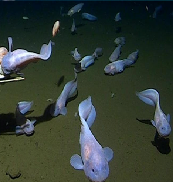

СЕМЕЙСТВА липаровых, или морских слизней.
ГЛУБИНА:Максимальная глубина, на которой учёные смогли выловить этих рыб, — 7 966 м
КОГДА ОТКРЫЛИ: 2014 и 2017 годах
ТИП ПИТАНИЯ:питается ракообразными.
Тело приспособлено к экстремальным условиям: скелет слабо развит и в основном состоит из хрящей, а череп не до конца закрыт, что позволяет давлению проходить сквозь ткани, не ломая их.
Рыба абсолютно слепа и не реагирует на подсветку ловушек. Чтобы противостоять давлению, у рыб такое же давление внутри — на поверхности глубоководные липарисы «взрываются», и изучать их трудно

наверх